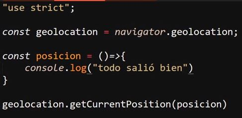
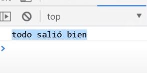
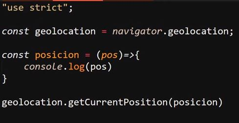
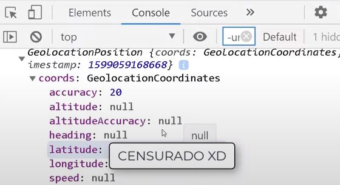
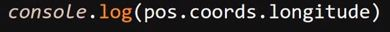
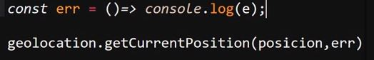
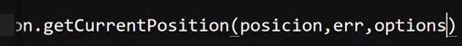
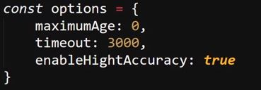
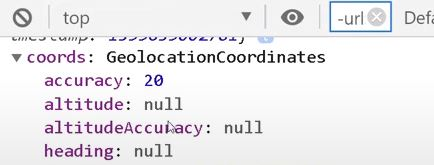

Geolocation
Se trata de la "api" especializada en trabajar con la ubicación del dispositivo. Para esto se accede al objeto "navigator", el cual es un objeto que hace referencia al navegador y se desglosará más adelante; por ahora lo relevante consiste en la aplicación de esta "api".
Para hacer uso de esta en el objeto "navigator" se utiliza el objeto ".geolocation". Este posee varios métodos creados específicamente para gestionar los datos de la ubicación del dispositivo; estos métodos son:
-
getCurrentPosition(): Este método requiere que se le ingrese al menos un parámetro para funcionar, pero en sí puede recibir hasta tres de estos.
Una característica curiosa de los parámetros de este objeto es que requieren estar igualados a funciones para funcionar, esto debido a que desde estas funciones es donde se indica qué acciones tomar al objeto; para esto los parámetros se igualan a funciones flecha.
Ejemplo

Resultado

-
El primero de estos parámetros hace referencia a la ubicación del dispositivo. Debido a que este parámetro de por sí no retorna ningún valor, se iguala este parámetro a una función, y si a su vez se le envía el parámetro "pos" a esta función interna se puede obtener la ubicación actual del dispositivo:

Resultado

Por lo tanto, es desde la función interna del parámetro del objeto que se puede acceder a la ubicación; de hecho, desde allí también se puede obtener la latitud y la longitud:
Latitud
Longitud

-
El segundo parámetro que recibe "getCurrentPosition()" se refiere al error. Esto debido a que existe la posibilidad de que ocurra algún error al tratar de obtener la ubicación del dispositivo; por lo tanto, este parámetro de igual forma se debe igualar a una función flecha la cual se encargará del manejo de los errores.
Ejemplo

-
El tercer y último parámetro se trata de "options", el cual se encarga de trabajar con las opciones. En este caso, este parámetro consiste en un objeto que almacena todas las opciones que se deseen incluir en la ubicación; entre estas opciones están:
-
maximumAge: Especifica el tiempo máximo (en milisegundos) que el navegador puede usar una ubicación almacenada en caché. El valor "0" indica que se debe obtener la ubicación actual forzosamente.
-
timeout: Esta opción define cuántos segundos deben demorar en devolverse los datos; el valor de esta opción debe expresarse en milisegundos.
-
enableHighAccuracy: Esta opción indica si se deben utilizar todos los recursos de ubicación disponibles para obtener la mayor precisión sobre la ubicación; esto se realiza aplicando el valor "true" en esta propiedad.
Ejemplo


Resultado

-
watchPosition(): Este método se encarga de hacer seguimiento de todos los cambios de ubicación; por lo tanto, se encarga de seguir al dispositivo mientras este se encuentra en movimiento. También se podría decir que este método permite obtener la ubicación en tiempo real.
-
clearWatch(): Este método permite borrar el historial de "watchPosition()".